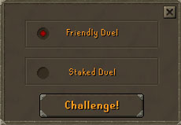
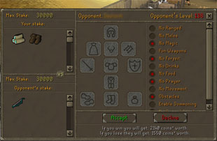
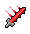
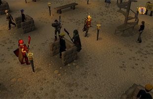

")
The Duel Arena
Staked and friendly duels at the Duel Arena are available to all players, but the Duel Arena tournaments are only available to RuneScape Members. Please subscribe to get this feature.
Please note that this is a 'Safe' activity. If you 'die' in a duel or duel tournament you will be teleported to the Duel Arena Hospital with all of your items except those you have staked or your duel tournament entry fee.
Introduction

Staked/Friendly duels can be fought on any world, but duel tournaments are restricted to specific worlds. To find out where you can fight in duel tournaments (or recommended worlds for staked/friendly duels), please check the themed worlds list.
Staked/Friendly Duelling
Duelling is a competition between two individuals to prove their might in combat, unlike the free-for-all style of PvP worlds or the mass combat of Clan Wars. If you choose to duel, you can focus all of your attention on a single foe.
 In the Duel Arena area above-ground, you can choose to fight either a 'friendly' duel or a 'staked' duel. The difference between them is that in a staked duel you can wager cash and items on the outcome (although the amount you can win is restricted; see the Staked Duels section below for further information). Friendly duels do not involve a stake and are solely for a bit of fun or some practice. The player you challenge will be informed whether you want a friendly duel or a staked duel.
Friendly Duels

On this screen you have a number of ways of restricting how the duel is fought. On the left, you can click on an inventory slot to disable it, while on the right you can select from a number of options. Your opponent can do the same.
Please note that disabling either one of the hand slots will prevent players from using ANY two-handed weapons. This includes all bows and halberds, the granite maul, etc. In addition, you cannot use salamanders if Magic, melee or Ranged are turned off.
The duel options are explained below:
| No Ranged: | Don't want someone popping arrows at you? Choose to turn off ranging. |
| No Melee: | Disables all hand-to-hand fighting. |
| No Magic: | Disallows the use of Magic in this duel. Good if you want to save your runes for later. |
| Fun Weapons: | Use a fun weapon to defeat your opponent, such as the rubber chicken or flowers. You cannot choose Fun Weapons and No Melee because all fun weapons are melee. |
| No Forfeit: | Fed up with your opponent giving up? Then tick this box and make it a fight to the death! You cannot choose No Forfeit and Fun Weapons. |
| No Drinks: | You and your opponent will not be able to drink any type of beverage or potion to boost your stats. |
| No Food: | Don't want your opponent eating food and healing all the time? Choose no food. |
| No Prayer: | Disallows the use of Prayer in this duel. |
| No Movement: | Don't want your opponent running away all the time? Tick this option. You cannot choose No Movement and No Forfeit/No Melee because you may run out of ammunition or runes. |
| Obstacles: | Are you a ranger or mage? Obstacles may help you to put a barricade between yourself and your opponent. You cannot choose Obstacles and No Movement. |
| Enable Summoning: | Feel like teaming up with a familiar to smite your foe? Turn on the ability to summon familiars. |
| No Special Attacks: | Some weapons have special attacks. This option turns these off. |
Note: If Summoning is enabled, familiars will be able to attack using all of their options - Selecting 'No Melee', for instance, will not stop a familiar from using melee to fight.
When you are happy with the set up, click 'Accept' and wait for your opponent to do the same. When you are both happy, you will be teleported into an arena - it's time to fight!
Staked Duels

Here, you can also see the value of the items that you will win if you are victorious in the duel. Note that there is a limit on the wealth that you can win/lose in a fifteen minute period. If you have already won/lost items or money in this time, you will only be able to win/stake a reduced amount. The amount you can win/stake is recalculated every minute to add coins to the total, up to your maximum trade limit. Your opponent's previous winnings/losses may reduce the amount you can stake against each other.
The value of items you stake is the market value defined by the Grand Exchange, rather than the item's shop/alchemy value.
In the example in the image above, for instance, if the player wins, they will get a magic shortbow (with a value of 2,140 coins). If they fight another staked duel immediately, they will only be able to win 27,860 coins' worth of wealth (30,000 - 2,140 = 27,860) and will be unable to start a duel until their opponent's stake is less than or equal to this value. You will be informed in the interface if this is the case.
Your own limits have no effect on how much your opponent can win.
If you are satisfied by the options and stake, click 'Accept'. When both of you have done so, you will see a confirmation screen.
You should check this carefully to make sure you are still happy with the conditions and stake, then click 'Accept'. When you have both done so, you will be teleported into an arena to fight out the duel. Note that all boosted stats will be returned to their normal value before any duel begins, although you can still use potions during the duel provided they haven't been disallowed.
Fighting the Duel

Both players will be taken to the hospital nearby to be healed. The winner can then savour their victory and receive their winnings!
Remember that this is a safe activity, so the only items you can lose are those that you stake. If you try to escape the duel by closing your browser, you will automatically lose and your opponent will be awarded your stake.
There is a scoreboard located just west of the Duel Arena Hospital, which displays the results of a number of recent staked/friendly duels.
Duel Tournaments
Beneath the main Duel Arena building is a large complex, constructed to run duelling tournaments for greater rewards. With 2 - 64 players able to duke it out, there's definitely the potential to bag some serious cash. Then again, you'll need to be at the top of your game to win...
NOTE - Duel tournaments are restricted to specific game worlds. To find out where you can fight in duel tournaments, please check the themed worlds list.
The entrance to the tournament registration room is just south of the Duel Arena Hospital. At the top of the staircase you will find the head registrar, who is more than happy to explain how duel tournaments work.
When you head downstairs to the registration room, you will see five registrars. You will not be able to approach every one of of these five registrars to start their tournaments: you must join a tournament that reflects how dangerous you are as a duel tournament opponent. So, if you are a potent fighter, you will find yourself registering with the higher number registrars. This fighting potency is determined mostly by your combat level, but other factors are also taken into account. You can find out which tournament is open to you by talking to the registrars or looking at the overlay in the top-right of your game screen.
Aside from winning cash in these tournaments, you will be aiming to gain ranks. A rank is an indication of how successful you have been at duel tournaments. For every 500 ranks that you go up, you will hit a milestone, a safe rank total that you will never be able to go below - no matter how many games you have lost! For example, a player at rank 1535 cannot drop below rank 1500, even if they have a poor run of results.
There is, however, a cap to the rank you can achieve at each registrar's tournament:
- Registrar 1: Cap of 1,999
- Registrar 2: Cap of 2,499
- Registrar 3: Cap of 2,999
- Registrar 4: Cap of 3,499
- Registrar 5: No cap
To get a rank that is higher than your tournament's cap, you will have to increase your combat level so you are eligible for higher tournaments.

You should be aware that the registrars will not start running tournaments until there are enough people in the registration room. If you find that you can't enter a tournament, try heading for a busier world.
These rules are decided by the tournament registrars, not the players entering the duel tournament. All of the rules apart from 'Heal Between Rounds' and 'Weapon Slots Only' are the same as those used when fighting a staked/friendly duel.
| Heal Between Rounds | If this is turned on, you will be automatically healed after each round of of the tournament. If this option is off but Food is on, you may still be able to eat if you have time. |
| Weapon Slots Only | This will disable all of your equipment slots except your weapon and quiver slots. |
When you are entered into a tournament, the active rules are represented by the following icons (note that there is no icon for obstacles):
Melee |
Magic |
Ranged |
Food |
Prayers |
|  Special attacks |
Drinks |
Healing between rounds |
Weapon slots only |
Summoning |
Your Duel Tournament Value and Rank
The first time you enter the tournament registration room, you will be assigned a registrar according to your fighting potency. This fighting potency represents how dangerous you are as an opponent in a duel tournament, and is based on a number of things including your combat level. The potency is used to decide which of the five registrars you are allowed to approach.Separate from this is your rank. Your rank represents how successful you have been in duel tournaments, and you can see this on the right-hand side of your game screen. This begins at 1,600 + your combat level; so, if you have a combat level of 79, you will have a tournament rank of 1,679 when you first go to the registration room. Note that the results of staked/fun duels have no effect on your tournament rank.
Whenever you win a round in a duel tournament, your rank will increase, while losing a round will decrease your rank, unless you are at a safe milestone. These safe milestones occur at every 500 rank levels; so, for example, a player of rank 1,535 could never drop below 1,500.
The amount your rank changes after each round is determined by three factors:
- Your current rank
- Your opponent's rank
- The tournament value
You can keep track of your duel tournament successes by looking up your rank on our website's Hiscores table. To feature in the Hiscores, you must have a tournament rank of at least 1,800.
The Duel Tournament

This information is:
- A number of icons representing the duel tournament rules. To remind yourself what each icon means, simply hover your mouse over them in the game window.
- The registrar running your duel tournament. You can resign from the duel tournament before it begins by clicking on them and selecting 'Resign' in the tournament rules window.
- Your current tournament rank.
- The tournament value.
- The entry fee for the duel tournament you have entered. You must have this in your inventory when the duel tournament begins. If you resign from the duel tournament, you will not lose any money.
- The time left until the duel tournament begins.
If you are carrying anything you cannot take into the duel tournament, you will see some text in the bottom-right corner of your game window.
If you have to remove some equipment or items, or want to change the equipment you fight with, you'll find three bank chests in the tournament registration room. You cannot take anything into a duel tournament that you cannot use according to the tournament's rules, nor can you take non-combat items except coins, which you will need in order to pay the entry fee.
When the duel tournament is ready to start, everyone who has entered will be briefly teleported to a waiting room. There, they will be assigned an opponent and the entry fee will be taken from their inventory. With that done, everyone will be teleported into the arena to fight it out!
If there are more than 64 players entering a tournament, then another tournament using the same rules will run simultaneously, again with up to 64 players. For instance, if 93 people are signed up for a tournament, the registrars will run a tournament of 64 players and a tournament of 29 players. In the case of an odd number of players signed up, one person will automatically proceed to the second round (because they would have no one to fight). Their tournament rank will not increase or decrease for that round.
You will only miss out on a tournament if you are the only player left over (if there are 65 people signed up for a tournament, for instance). If this is the case, you can wait for the next tournament to begin in order to get a place. Please be aware that the people moved into a specific tournament are chosen randomly, and being the first to sign-up or the highest-ranked has no effect.
After each round, those who have won their fights will be teleported back to the waiting room until all of the other duels have been completed. The survivors will then be assigned a new opponent. The tournament rounds will repeat in this way until there is a single victor. You will only be healed between rounds if this is one of the duel tournament rules. If you have time, though, and the duel tournament allows food, you can eat to recover your health. If you lose a round, you will be teleported to the Duel Arena Hospital and all of your injuries will be healed.
You may resign from a duel tournament before it begins without penalty, and you can forfeit the tournament at any time by clicking on one of the trapdoors in the tournament arena or waiting room. Note that you will count as losing your duel, so your tournament rank will decrease and you will not get your entry fee back.
 Each round has a time limit. In the event that you are still fighting when it finishes, the judges will award victory to the player who has inflicted the greatest damage. If the unlikely occurs and you have both done the same amount of damage, the judges will give the victory to the player whose performance impressed them the most.
Each round has a time limit. In the event that you are still fighting when it finishes, the judges will award victory to the player who has inflicted the greatest damage. If the unlikely occurs and you have both done the same amount of damage, the judges will give the victory to the player whose performance impressed them the most.
If you win the duel tournament, you will be teleported to the Duel Arena Hospital, all of your wounds will be healed, and you will receive 80% of the entry money taken. So, the more players in a duel tournament, the more money you can win! Whoever comes second gets 20% of the tournament totals, and will be listed alongside the winner on the duel tournament scoreboard in the registration room.
You can also keep track of your duel tournament prowess by looking at the Hiscores table on the website. You must have a tournament rank of at least 1,800 to be ranked in the Hiscores.
Development Team
| Rework | |||
| Developer: | Jon S | Developer: | Nancy J |
| QA: | Mark O, Simon B | QA: | Nick C, Andy C |
| Graphics: | Joe R | Graphics: | Linh N, Damian C, Kavi M, Lluis P, Nick F, Wayne M |
| Audio: | Ian T | Audio: | Chris J |

More articles in
Activities
|
|
|
Further Help
If this article does not help you, you may find the following sections of the RuneScape site helpful:
|
|